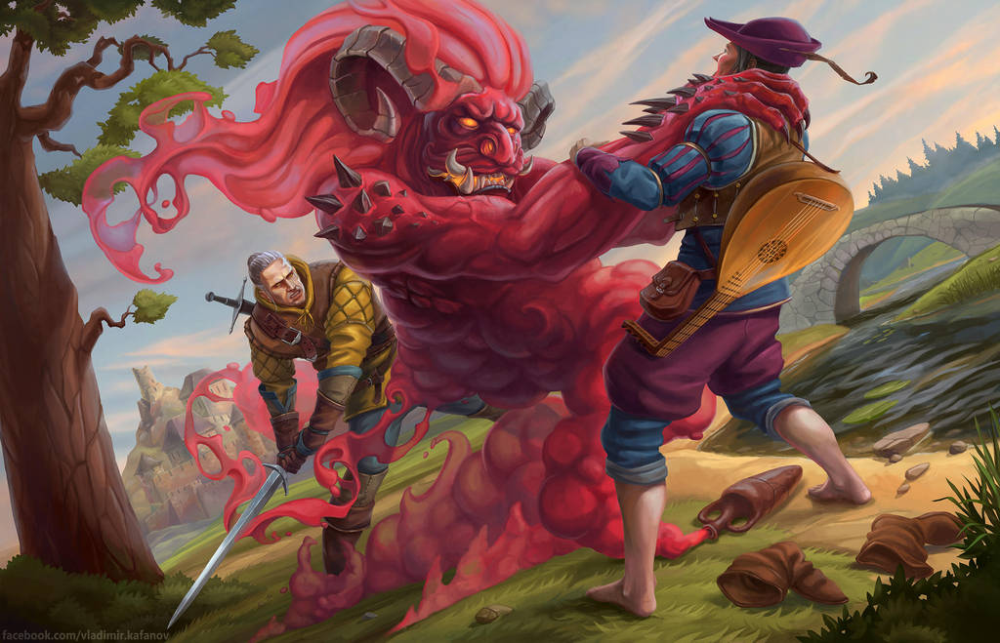

Čarodějka Visenna spolu s rytířem Korinem, kterého potkala zraněného na cestě, přijíždí do osady Klíč, kterou sužuje černokněžník Fregenal. Ten stvořil kostěje a najal bandu loupežníků složenou z lidí, vranů, elfů a bobolaků. Vissena s Korinem a rolníky na kostějovce plánují zaútočit, ale k boji nedojde, protože bobolak Kehl se stal vůdcem tlupy loupežníků, domluvil se s lidmi na příměří a s tlupou odešel. Vissena poté pustí na svobodu Fregenala pod podmínkou, že jim pomůže zabít kostěje. Fregenal je ovšem zradí a naláká je do pasti. Moc k užitku mu to ovšem není, protože ho následně zabije sekera kováře Mikula. Visseně se následně podaří kostěje zabít, ale ten ještě předtím smrtelně zraní Kehla, který se vrátil jim pomoci. Kehl na svá zranění umírá a Vissena s Korinem odjíždějí pryč.
Geralt z Rivie se ve Svatyni Melitelé zotavuje ze zranění, které si způsobil při souboji se strigou. Do Svatyně Melitelé následně přijíždí bard Marigold, Geraltův starý přítel a společně se chystají vydat na cestu na Konec světa. Ještě před odjezdem ovšem musí Geralt svést souboj s rytířem Taillesem, který ho vyzval. Geralt souboj vyhrává a spolu s Marigoldem odjíždí pryč.
Zaklínač Geralt z Rivie přijíždí do temerského města Wyzima, kde zakletá dcera krále Foltesta v podobě strigy již dlouho zabíjí občany města. K odčarování princezny je nutno strávit jednu noc v její blízkosti a přežít. Tento nelehký úkol se Geraltovi podaří splnit a princeznu odčarovat, za což od krále Foltesta získá odměnu v podobě tří tisíc orénů.
Při své cestě objeví Geralt dvě mrtvá těla. Stopy ho zavedou až ke stavení, kterému vládne prokletý loupežník Nivellen. Toho při přepadení jednoho chrámu proklela jakási kněžka, čímž získal podobu netvora s lidskou postavou. Ve stavení žije spolu s dívkou Vereenou, o které si myslí, že je rusalka. Z Vereeny se ovšem vyklube bruxa, extrémně nebezpečný druh upíra. Vereena se pokusí zabít Geralta a při následném souboji je zabita Nivellenem. Tím, že Nivellen zabije dívku, kterou miloval, ze sebe strhne prokletí a stane se znovu člověkem.
Geralt ve městečku Blaviken potká svého starého známého, mága Stregobora. Ten se mu svěří, že se ho snaží zabít mutantka Renfri spolu se svojí tlupou. Renfri, bývalá princezna, Stregobora pronásleduje, protože ten se ji dříve jako mutantku snažil zabít. Renfri musela utéct, přišla o svůj život princezny a stala se loupežnicí a vražedkyní. Geralt, přestože se do celé věci nechce míchat, se nakonec musí rozhodnout. Jelikož se Stregobor zavřel ve své věži, do které se nikdo nedostane, plánuje Renfri začít vraždit obyvatele ve městě a tím přimět Stregobora se vzdát. Geralt proto svede boj se členy její tlupy, všechny a zabije a poté v souboji usmrtí i Renfri. I přesto, že zachránil obyvatele města, je mu připsána přezdívka Řezník z Blavikenu.
Královna Cintry, Callanthé, pozve Geralta na námluvy své dcery, princezny Pavetty. Geralt zde má zajistit, aby se Pavetta provdala s nějakým šlechticem ze Skellige, jelikož by tento sňatek byl pro Cintru výhodný. Geralt se snaží Callanthé vysvětlit, že není nájemný vrah, nýbrž zaklínač, ale Callanthé tento fakt nebere na vědomí a tvrdí, že je to pouze otázka ceny. Na hostinu přijde i Ježek z Erlenwaldu, rytíř, který má díky prokletí od svítání do půlnoci tvář ježka a od půlnoci do svítání normální lidskou podobu. Ježek si dělá nárok na Pavettu, protože před patnácti lety zachránil jejímu otci, králi Roegnerovi život. Roegner mu za odměnu slíbil, že mu dá to, co nečeká a co nalezne doma po svém příjezdu. Ono překvapení byla jeho novorozená dcera, princezna Pavetta. Ta se s Dunym, což je Ježkovo pravé jméno, schází již rok, miluje ho, a chce si ho vzít. Královna přikáže strážím, aby Dunyho zabili, ale Pavetta díky své skryté Moci začne ničit vše v místnosti. Geraltovi s druidem Myšilovem se podaří Pavettinu Moc, kterou ona sama již nezvládne ovládat, zastavit. Královna Callanthé poté prohlásí, že dává Dunymu Pavettu, čímž zlomí prokletí. Duny, který se chce Geraltovi odvděčit, mu řekne, že mu dá cokoliv, o co požádá. Geralt požádá o to, co již Duny má, ale neví o tom. Chvíli poté Duny zjistí, že s Pavettou čeká dítě.
Geralt s Marigoldem přijíždí do Dol Blathanna (Údolí květů), kde hledá novou práci. V jedné vesnici mají problém s čertem, který jim krade obilí a ničí věci ve vesnici. Geralta s Marigoldem při snaze čerta vyhnat zajme skupina elfů. Čert jménem Torque totiž pro elfy, kteří trpí hladomorem, krade potraviny z vesnice. Jelikož elfové nemůžou dovolit, aby měli svědky, chtějí Geralta i Marigolda zabít. S tím ovšem nesouhlasí Torque, který je chce bránit. Na poslední chvíli k elfům přijde Dana Méadbh, Polní pana, které jsou elfové plně oddaní. Elfové poté pouští Geralta a Marigolda, a ti společně s Torquem odjíždí pryč.
Marigolda zraní džin, mocný génius povětří, osvobozený z láhve. Geralt se proto vydává do města Rinda, kde pro pomoc najde čarodějku Yennefer z Vengebergu. Ta sice Marigolda vyléčí, zároveň ale očaruje Geralta a s jeho pomocí se pomstí lidem ve městě, kteří ji pomlouvali. Poté chce džina vyvolat a chytit ho. Geralt, ze kterého mezitím již spadlo zakletí se vrací zpátky a snaží se v tom Yennefer zabránit. Té se džina nedaří chytit, protože ten Geraltovi splnil pouze dvě přání a nemůže odejít, dokud nesplní třetí. Geraltovo poslední přání je Yennefer, do které se zamiluje. Džin poté odlétá pryč a Geralt zůstává s Yennefer.
